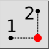
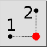
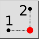
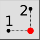

Y/X z punktów
Pasek narzędziowy / ikona:
 

Menu: Przyciąganie > Y/X z punktów
Skrót: ., Y
Polecenia: .y
Jest to tłumaczenie automatyczne.
Pasek narzędziowy / ikona:
 

Menu: Przyciąganie > Y/X z punktów
Skrót: ., Y
Polecenia: .y
Narzędzie to działa tak samo jak narzędzie X/Y z Punktów, ale w odwrotnej kolejności wprowadzania współrzędnych